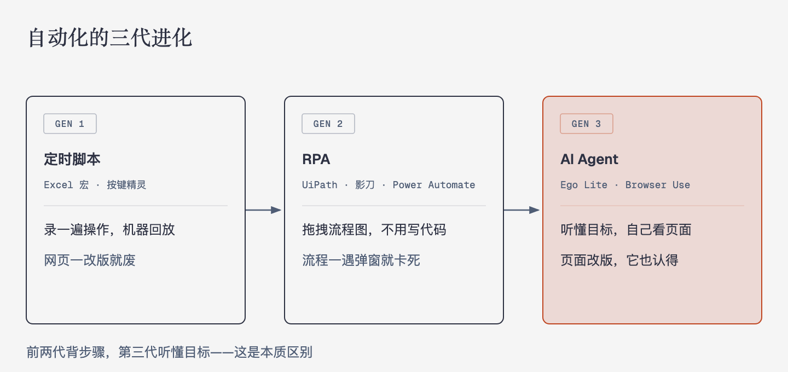
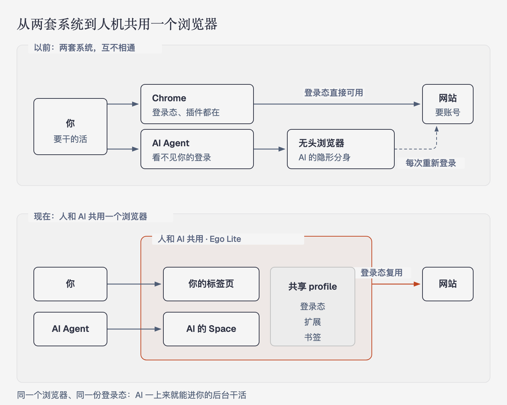

这是「任务流自动化」系列的第一篇，写给所有人。技术原理和架构细节在第二篇《AI 浏览器自动化技术拆解》，两篇互相呼应：这篇讲"它能帮你做什么、怎么用"，那篇讲"它到底是怎么做到的"。
想一想这些场景：
这些事情有个共同点：步骤固定、重复、不需要动脑子，但很花时间。这就是"任务流自动化"要解决的问题——把这些活儿交给机器。
第一代：定时提醒 + 复制粘贴脚本。 最早人们用 Excel 宏、按键精灵这类工具，录制一遍操作，之后机器照着回放。能用，但特别脆：网页改个按钮位置，脚本就废了。
第二代：RPA（机器人流程自动化）。 UiPath、影刀、Power Automate 这类产品把操作抽象成"流程图"：打开这个网页 → 点这个按钮 → 把这里的内容填进去。不用写代码，拖拖拽拽就能搭流程。企业用它处理大量标准化业务，比如发票录入、批量对账。但它的短板和第一代一样——机器只会死记硬背。页面一改版、流程里出现一个没预料到的弹窗，整个流程就卡死，还得人回来修。
第三代：AI Agent 操纵浏览器。 大语言模型出现后，事情变了。现在的自动化不再是"背步骤"，而是"听懂目标"：你只说"帮我把这周没回复的邮件整理个清单发给老板"，AI 自己看页面、理解内容、决定点哪里、填什么。页面改版了？没关系，它认识。
本篇的主角 Ego Lite，就是第三代的代表产品。

ego lite 是一款开源（免费使用）的浏览器，上线不久就拿了约 8000 颗 star。它最特别的一点是：它是你日常用的浏览器，同时也是 AI 能直接操作的浏览器。
以前的做法是两套系统：人用一个 Chrome，AI 自动化跑在另一个看不见的"无头浏览器"里。问题是 AI 看不到你登录过的网站，摸不到你的书签和插件，每次都要重新登录、重新配置。
Ego Lite 的思路是反过来的：它基于 Chromium（和 Chrome 同内核），你平时怎么用 Chrome 就怎么用它——插件、登录状态、浏览记录全都在。当 AI 需要干活时，它在这个浏览器里开一个自己的独立工作区（Space），在别的标签页里操作，和你正在看的页面互不干扰。因为它继承了你的登录状态，AI 一上来就能进你的后台系统干活，不用你再输一遍密码。

它能干什么？举几个真实使用方式的例子：
遇到 AI 搞不定的事——比如要扫人脸、输验证码——它会把浏览器交还给你，你操作完它再接着干。这个"人机接力"的设计很关键：自动化不是全有或全无，而是 AI 干 90%，人补关键的 10%。
| 产品 | 一句话定位 | 适合谁 |
|---|---|---|
| Ego Lite | 人和 AI 共用的浏览器，可被 Claude Code、Cursor 等 AI 工具直接驱动 | 想让 AI 在"自己真实环境"里干活的个人和团队 |
| Browser Use | 开源的 AI 操作浏览器框架，开发者用它给自己的 AI 加"手" | 开发者 |
| OpenAI Operator / Claude 的电脑操作 | 大厂官方的 AI 上网能力，聊天式下达任务 | 普通用户，开箱即用 |
| 影刀 RPA / UiPath | 拖拽式流程编排，稳定可审计 | 企业批量业务流程 |
| Zapier / n8n | 应用之间的"数据管道"，A 发生就触发 B | 不碰网页界面、只做软件间联动的场景 |
简单记法：Zapier 管软件和软件之间，RPA 管固定流程，AI Agent 管说不清楚、但目标明确的活儿。三者正在融合——影刀在加 AI 节点，AI Agent 也在学会调用固定接口。
1. 说目标，不说步骤。 以后你描述的不再是"先点 A 再点 B"，而是"每周五把本周销售数据发给老板"。至于中间是开网页、调接口还是写邮件，AI 自己决定。
2. 一个人带一个"AI 团队"。 你会有多个 AI 并行工作：一个盯数据、一个回邮件、一个整理文档。Ego Lite 的多工作区设计就是为此准备的——每个 AI 各占一个空间，互不打架。
3. 人只做"签字"和"兜底"。 关键决策（付款、发送、删除）仍由人确认，AI 负责把 99% 的准备工作做完。你的角色从操作员变成审批者。
4. 自动化民主化。 过去搭一套 RPA 要顾问进场花几十万；现在会打中文，就能让 AI 帮你干活。这是继"会用搜索引擎"之后，普通人效率的又一次代际跃迁。
1. 挑一个"高频 + 低风险 + 步骤烦"的活儿：比如每周数据导出、批量查价。别一开始就选付款这种高风险操作。
2. 用大白话把目标说清楚："打开 XX 后台，导出上周订单表，把金额汇总发我。" 现在的 AI 工具（包括 Claude Code 配合 Ego Lite）已经能直接听懂这种话。
3. 第一次全程盯着，之后放手。 看一遍 AI 怎么做，纠正它理解错的地方；跑顺两次之后，就可以让它定时自己干了。
自动化不是让机器取代你，而是把你从"人肉中间件"的位置上换下来——去干那些真正需要人的事。
想深入了解这些工具背后的原理——AI 是怎么"看见"网页、怎么决定点哪里的？请看系列第二篇：《AI 浏览器自动化技术拆解》。
本文属于「任务流自动化」系列，系列目录见 zhaochenyang.github.io/automation。转载请注明出处。